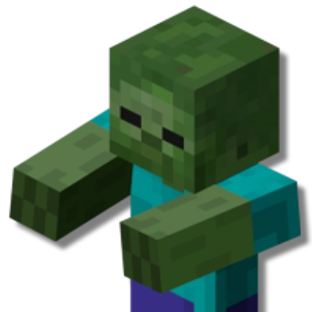

Спектры
Искуственная форма жизни, способная произвольно меняь форму своего тела.

y — с.
Особенности спектров
Создавая спектров, вы .
Тип существа. Гуманоид.
Срок жизни. Не ограничен.
Цвет. Постоянный, индивидуальный, может быть любой.
Внешние признаки. Переменные, произвольные.
Вес. Около 2 килограмм.
Особенности cпектров
Увеличение характеристик. Либо значение одной характеристики на выбор увеличивается на 2, а другой на 1, либо значение трёх различных характеристик на выбор увеличивается на 1.
Скорость. Ваша базовая скорость ходьбы составляет 30 футов.
Специализация. Вы получаете 1 дополнительное очко Подклассов или 1 дополнительное Улучшение 1-го ранга.
Основная форма. Ваша основная форма — Средний гуманоид.
Аморфный. Вы полностью состоите из крайне пластичной материи, благодаря чему вы можете изменять своё тело. Вы можете действием изменять объём вашего тела в диапазоне от Крошечного до Большого. Действием вы можете произвольно визуально изменить форму тела: от добавления новых голов, до превращения в лужу. Изменяя форму, вы можете использовать предметы и заклинания, но броня и щиты могут иметь эффект, только если вы остаётесь гуманоидом.
Некоторые превращения имеют дополнительные эффекты, список которых приведён ниже.
Дополнительные руки. Вы можете создать дополнительные руки, но они могут лишь держать предметы и выполнять простые действия, как например открыть дверь, взять или положить предмет.
Хранение. Вы действием положить любой предмет внутрь своего тела и хранить там. Действием вы можете достать любой предмет изнутри.
Отделение. Вы можете отделять от себя фрагменты и управлять ими на расстоянии, одако фрагмент исчезает спустя 12 секунд, вернув материю вам обратно.
Инструментарий. Вы можете предавать физические свойства металла вашим конечностям. Как следствие, вы можете превращать руки в различные простые инструменты, как например молоток, отвёртка или клинок. Вы можете использовать это как рукопашное оружие. Это оружие наносит 1к8 урона и использует Силу в качестве основной характеристики. Считайте, что вы владеете этим оружием.